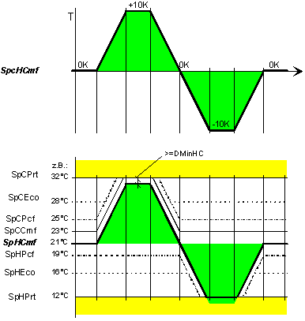
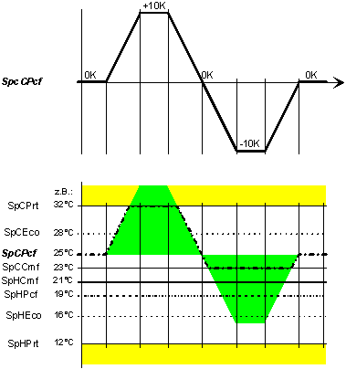

[SP_TR] Determination of room temperature setpoints
SP_TR allows for central definition of room setpoints for heating and cooling in all operating modes. SP_TR has several setpoints due to setpoint corrections. [SpHCmf] is the base setpoint. If [SpHCmf] is increased or decreased, other setpoints are increased or decreased accordingly. One or several correction values are used to update the room setpoints.
Functioning
The following functions are integrated in SP_TR:
- Correction for room setpoints for Comfort, Pre-Comfort, and Economy (heating, cooling).
- Adjustment of dependent room setpoints based on the setpoint shift model.
SP_TR calculates all present room setpoints based on the active setpoint corrections and of a setpoint shift model.
Step | Process |
|---|---|
1 | Heating setpoint for Comfort [PrSpHCmf] = [SpHCmf] + [SpcHCmf] The upper limit is [SpCPrt] - [DMinSpHC]; the lower limit is [SpHPrt]. Example 1: Setpoint correction via [SpcHCmf]. |
2 | Cooling setpoint for Comfort. [PrSpCCmf] = [SpCCmf] + maximum of ([SpcCCmf], [SpcHCmf]). The upper limit is [SpCPrt]; the lower limit is [PrSpHCmf] + [DMinSpHC]. Example 2: Setpoint correction via [SpcCCmf].
|
3 | Cooling setpoint for Pre-Comfort. [PrSpCPcf] = [SpCPcf] + maximum of ([SpcCCmf], [SpcHCmf]). The upper limit is [SpCPrt]; the lower limit is [PrSpCCmf]. Example 3: Setpoint correction via [SpcCCmf].
Analogous: [SpcCCmf]. Example 2: Setpoint correction via [SpcCCmf]. |
4 | Cooling setpoint for Economy. [PrSpCEco] = [SpCEco] + [SpcCEco]. Or if [PrSpCPcf] > [SpCEco]: [PrSpCEco] = [SpCEco] + maximum of ([SpcCEco], SpcCCmf], [SpcHCmf]). The upper limit is [SpCPrt]; the lower limit is [PrSpCPcf]. Example 4: Setpoint correction via [SpcCEco].
Analogous: [SpcCCmf]. Example 2: Setpoint correction via [SpcCCmf]. Analogous: [SpcCCmf]. Example 3: Setpoint correction via [SpcCCmf]. |
5 | Heating setpoint for Pre-Comfort. [PrSpHPcf] = [SpHPcf] + [SpcHPcf]. The upper limit is [SpCCmf]; the lower limit is [SpHPrt]. Example 5: Setpoint correction via [SpcHPcf].
|
6 | Heating setpoint for Economy. [PrSpHEco] = [SpHEco] + [SpcHEco] Or if [PrSpHPcf] > [SpHEco]: [PrSpHEco] = [SpHEco] + minimum of ([SpcHPcf], [SpcHCmf]). The upper limit is [SpHPcf]; the lower limit is [SpHPrt]. Example 6: Setpoint correction via [SpcHEco]. |
Example 1
Setpoint correction via [SpcHCmf]

Calculation rules:
- If [SpHCmf] increases or decreases, all other setpoints except [SpCPrt] and [SpHPrt] increase or decrease accordingly.
- Example: [SpHCmf] increases by 2 °C. The other setpoints (except [SpCPrt] and [SpHPrt]) also increase by 2 °C.
- The cooling setpoints [PrSpCCmf], [PrSpCPcf] are raised by [SpcHCmf].
- The heating setpoint [PrSpHPcf] is lowered by [SpcHCmf]
- The cooling setpoint [PrSpCEco] is raised along with [PrSpCPcf]. The heating setpoint [PrSpHEco] is lowered along with [PrSpHPcf]
- [SpCPrt] and [SpHPrt] limit all present setpoints [PrSp...].
- The difference between [PrSpCCmf] and [PrSpCPcf], or between [PrSpHCmf] and [PrSpHPcf] becomes smaller only at the limits [SpCPrt] or [SpHPrt].
- The difference between [PrSpHCmf] and [PrSpCCmf] is always equal or greater to [DMinSpHC]. Accordingly, [PrSpHCmf] has an upper limit.
Example 2
Setpoint correction via [SpcCCmf]

Calculation rules:
- The cooling setpoint [PrSpCPcf] is raised by [SpcCCmf].
- The cooling setpoint [PrSpCEco] is raised along with [PrSpCPcf].
- [SpcCCmf] does not influence the heating setpoints [PrSpH...].
- [SpCPrt] and [SpHCmf] + [DMinSpHC] limit [PrSpCCmf].
- The difference between [PrSpCCmf] and [PrSpCPcf] becomes smaller only at the limit [SpCPrt].
- The difference between [PrSpHCmf] and [PrSpCCmf] is always equal or greater to [DMinSpHC]. Accordingly, [PrSpCCmf] has a lower limit.
Example 3
Setpoint correction via [SpcCCmf]

Calculation rules:
- The cooling setpoint [PrSpCEco] is raised along [PrSpCPcf].
- [SpcCCmf] does not influence the heating setpoints [PrSpH...] and [PrSpCCmf].
- [SpCPrt] and [SpCCmf] limit [PrSpCPcf].
Example 4
Setpoint correction via [SpcCEco]

Calculation rules:
- [SpcCEco] does not influence the heating setpoints [PrSpH...] and [PrSpCCmf], [PrSpCPcf].
- [SpCPrt] and [SpCPcf] limit [PrSpCEco].
Example 5
Setpoint correction via [SpcHPcf]

Calculation rules:
- The cooling setpoint [PrSpHEco] is lowered along with [PrSpHPcf].
- [SpcHPcf] does not influence the cooling setpoints [PrSpC...] and [PrSpHCmf].
- [SpHCmf] and [SpHPrt] limit [PrSpHPcf].
Example 6
Setpoint correction via [SpcHEco]

Calculation rules:
- [SpcHEco] does not influence the cooling setpoints [PrSpC...] and [PrSpHCmf], [PrSpHPcf].
- [SpHPcf] and [SpHPrt] limit [PrSpHEco].
Example 7
Simultaneous setpoint correction via [SpcHCmf] and [SpcCCmf]
The following diagram shows the behavior during a simultaneous, parallel shift of [PrSpHCmf] and [PrSpCCmf] by the same value. This is typical behavior for knobs with a mechanically stored locked state.

Because [PrSpHCmf] is the manager (calculated first), it moves all upper curves prior to calculation.
Pins
Input | Description | Data type | Default value |
|---|---|---|---|
|
SpCPrt | Cooling setpoint for protection Condition: [SpCPrt] <= [SpMax], and [SpCPrt] >= [SpHPrt] + [DMinSpHC]. | Real | 40.0 [°C] |
|
SpCEco | Cooling setpoint for economy Condition: [SpCEco] <= [SpCPrt], and [SpCEco] >= [SpCPcf].
| Real | 35.0 [°C] |
|
SpcCEco | Cooling setpoint correction for economy | Real | 0.0 [K] |
|
SpCPcf | Cooling setpoint for pre-comfort | Real | 28.0 [°C] |
|
SpcCPcf | Cooling setpoint correction for pre-comfort | Real | 0.0 [K] |
|
SpCCmf | Cooling setpoint for comfort Condition: [SpCCmf] <= [SpCPrt], and [SpCCmf] >= [SpHCmf] + [DMinSpHC]. | Real | 26.0 [°C] |
|
SpcCCmf | Cooling setpoint correction for comfort | Real | 0.0 [K] |
|
SpHCmf | Heating setpoint for comfort Condition: [SpHCmf] >= [SpHPrt], and [SpHCmf] <= [SpHCmf] - [DMinSpHC]. | Real | 21.0 [°C] |
|
SpcHCmf | Heating setpoint correction for comfort | Real | 0.0 [K] |
|
SpHPcf | Heating setpoint for pre-comfort Condition: [SpHPcf] >= [SpHPrt], and [SpHPcf] <= [SpHCmf]. | Real | 19.0 [°C] |
|
SpcHPcf | Heating setpoint correction for pre-comfort | Real | 0.0 [K] |
|
SpHEco | Heating setpoint for economy Condition: [SpHEco] >= [SpHPrt], and [SpHEco] <= [SpHPcf]. | Real | 15.0 [°C] |
|
SpcHEco | Heating setpoint correction for economy | Real | 0.0 [K] |
|
SpHPrt | Heating setpoint for protection Condition: [SpHPrt] >= [SpMin], and [SpHPrt] <= [SpMax] - [DMinSpHC]. | Real | 12.0 [°C] |
|
DMinSpHC | Delta minimum heating-cooling setpoint Smallest difference between the highest heating setpoint and the lowest cooling setpoint | Real | 0.5 [K] 0.0…3.4E38 [K] |
|
SpMax | Maximum setpoint Maximum setpoint which a present setpoint [Pr...] must not exceed. | Real | 40.0 [°C] |
|
SpMin | Minimum setpoint Minimum setpoint which a present setpoint [Pr...] must not exceed. | Real | 10.0 [C] 0.0…3.4E38 [K] |
Output | Description | Data type | Default value |
|---|---|---|---|
|
PrSpCPrt | Present cooling setpoint for protection | Real | 0 [°C] |
|
PrSpCEco | Present cooling setpoint for economy | Real | 0 [°C] |
|
PrSpCPcf | Present cooling setpoint for pre-comfort | Real | 0 [°C] |
|
PrSpCCmf | Present cooling setpoint for comfort | Real | 0 [°C] |
|
PrSpHCmf | Present heating setpoint for comfort | Real | 0 [°C] |
|
PrSpHPcf | Present heating setpoint for pre-comfort | Real | 0 [°C] |
|
PrSpHEco | Present heating setpoint for economy | Real | 0 [°C] |
|
PrSpHPrt | Present heating setpoint for protection | Real | 0 [°C] |
|
SysUnits | System of units Indicates the system of units used by the block. | Integer | 1: International system of units (SI) (fallback) 1...5 |
1: International system of units (SI) (fallback) | |||
|
ErrCode | Error code indication | Integer | 0: No error |
= 0 - No error | |||
Application
Summer/winter compensation
The setpoint correction for summer/winter compensation can be interconnected directly.
Room operator unit with knob
A room operator unit with a knob can be interconnected directly.
Example
The following diagram shows an example for summer/winter compensation and a room operator unit with a knob.